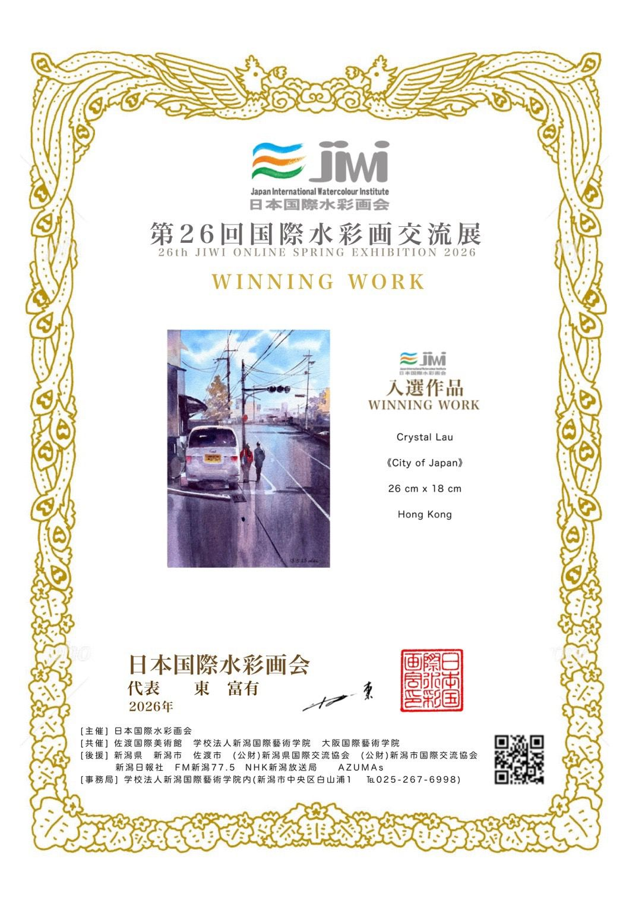

Hi, I'm Crystal! Welcome to my studio.
I'm Crystal Lau, a contemporary artist specialising in watercolour and oil painting, and the founder of SKY GALLERY.
Art is not merely colour on paper; it is an observation of the world and a timeless extension of one's emotions.
My artistic journey
The art of plein air: capturing life as it happens
For over a decade, my greatest joy has been stepping outdoors with my easel in hand — embracing the practice of plein air painting. There is something magical about chasing the light, capturing the subtle breeze, and transforming fleeting natural moments into lasting visual stories.
Plein air painting is more than just a technique; it is a conversation between the artist and the world. Unlike working in the controlled environment of a studio, painting outdoors challenges me to react in real time — to the shifting shadows across an old urban street, or the golden sun rays striking a centuries-old wooden shrine.
Finding beauty in the everyday cityscape
Look closely at the world around you. There is quiet beauty hidden in the bustle of daily life. Standing on a vibrant city street corner, I am drawn to the strong geometric shapes of weathered buildings, the distinctive warmth of classic store signs, and the interplay of light reflecting off passing vehicles. Painting these scenes isn't about capturing every single detail; it's about translating the rhythmic pulse of the city and its sun-drenched atmosphere onto paper with decisive, confident washes.
Preserving culture and quiet moments
Every location carries its own unique voice and light. When travelling, my sketchbook becomes my most personal travel diary. Sitting before intricate traditional architecture — observing the rich warm tones of carved wooden beams and luminous paper lanterns — plein air painting forces me to slow down. It turns a quick visit into a deep, meditative experience where every stroke pays homage to craftsmanship, history, and sacred tranquility.
Why I love plein air painting
Plein air painting teaches us to let go of perfectionism and embrace spontaneity. It builds quick observation skills, strong value control, and a deep intuition for colour harmony that no studio setting can replicate.
Through my courses, I want to invite you to step out of your comfort zone, pick up your brush, and experience the world through an artist's eyes. You don't need to travel far — beauty is waiting right outside your doorstep, ready to be painted.
From gallery walls to global community
While painting is a personal form of expression, I believe art becomes truly powerful when shared. Over the years, my work has been featured in mainstream media, published in art collections, and acquired by institutional permanent collections, such as the Sun Museum. In 2018, I launched my YouTube channel, Crystal Lau Art, to share the joys of plein air sketching and art history with a broader audience. It showed me how art can bridge distances and connect people anywhere in the world.
Meet your instructor: A lifetime of passion & art
Since childhood, art class was always the highlight of my week and my most consistent source of pride. I spent countless hours at home with a paintbrush in hand, sketching whatever caught my eye. Soon my school textbooks were filled with drawings — and it wasn't long before my classmates' books became my canvases too. Over time I realised that painting was more than a passing interest; it was my true passion. Representing my school in art competitions and earning awards brought me immense joy and built my foundation as an artist.
My journey as a teacher began at the age of 16. That was the moment I discovered something incredible: guiding others to paint and watching them fall in love with art is even more rewarding than completing a painting of my own.
Later I opened my own art studio, a vibrant space that has now thrived for over 15 years. Throughout this journey the greatest reward has been connecting with so many fellow art lovers. While I share my technical knowledge with my students, they teach me just as much in return — showing me new perspectives and deeper ways to feel and experience art. Teaching and learning truly feed into each other.
I am deeply grateful for this online platform, which allows me to reach and connect with art enthusiasts from around the world. Here we learn together, grow together, and celebrate the joy of creation.
Demystifying the process
Many people want to paint, but stop themselves before they even begin. They worry about "lacking natural talent," struggle with controlling unruly watercolours, or feel overwhelmed by the layers of oil painting.
Here is the truth: painting is not an exclusive privilege for a gifted few — it is a learnable, structured skill.
In my courses, you won't find overly academic jargon or intimidating rules. Instead, I focus on warm, practical, step-by-step guidance:
Developing an artist's eye
Learn to see the world differently by understanding light, proportion, structure, and atmospheric depth.
Mastering your medium
Gain full control over watercolour transparency and oil layering rules so your materials work with you, not against you.
Finding your own visual voice
My goal isn't to teach you how to copy my style, but to help you build the confidence to paint what speaks to your heart.
A glimpse into the journey
To give you complete confidence in learning with me, here is a glimpse into my journey as an artist and educator.
Art education & outreach
Founder of SKY GALLERY with over 10 years of teaching experience; recipient of the Outstanding Art Education Award; invited artist exchange at the Repin Academy of Fine Arts in Russia.
Collections & media features
Permanent collection at the Sun Museum; work featured on local magazine cover stories and dedicated art publications.
International honours & exhibitions
- 2026 Top 18 Finalist, International Watercolor Academy Award (Accademia Internazionale dell'Acquarello, Italy)
- 2025 Selected, 25th International Watercolor Spring Exhibition (Japan International Watercolour Institute)
- 2017 Selected, Fabriano in Acquarello (Italy)
- 2016 Selected, 1st Hong Kong International Biennial Exhibition

Beginner or experienced artist
Stepping into art for the very first time
Welcome! Consider this studio your safe space to explore, experiment, and have fun without any pressure.
An experienced painter
Looking to refine your brushwork, master light and shadow, or deepen your plein air skills? You'll find structured, practical insights to help you break through to the next level.
Grab a cup of tea, set up your brushes, and let's enjoy the process of bringing colour to life!
Write to the studio.
A question about a course, a commission, or just to show me what you're painting this week — write to the studio and it comes straight to me.
- Emailcrystalau430@gmail.com
- DiscordFellows channel — invite arrives after enrolment
- Instagram@crystalauart — daily studies
- Facebookfacebook.com/crystal430
- OriginalsGallery pieces ship worldwide via my Etsy shop
Terms & privacy
Purchases & refunds
Courses are one-time purchases — no subscription. Pricing and the terms of access are being finalised and will be confirmed here before launch.
A refund policy will apply to course purchases. The exact terms are still being confirmed and will be published here before launch.
Using the course materials
Course videos, notes and downloads are licensed for your personal study. You're welcome — encouraged! — to paint from the reference photos and share your paintings anywhere, credited or not.
The videos and written materials themselves may not be re-uploaded, re-sold or shared outside your household. Teachers wanting to use materials in a classroom: write to me, I'm usually happy to arrange it.
Your account & your data
Your email is used for receipts, course access and — only if you opt in — the occasional studio letter. No marketing lists, no data sold to anyone, ever.
Under UK GDPR you can request, correct, export or delete your data at any time from your account settings, or by emailing me. Deletion requests are completed within 30 days.
Cookies
Essential cookies keep you signed in and remember your cart. Optional analytics cookies help me see which lessons people get stuck on — you choose in the cookie banner, and can change your mind anytime via "Privacy choices & data rights" in the footer of the cookie panel.